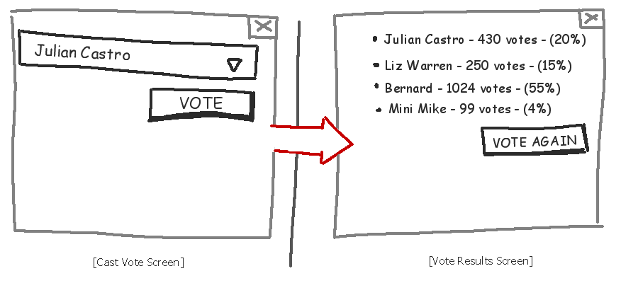
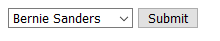

MVC Web Stuff - How To Do It Wrong
Oh no! As the newly hired lead software developer for the American Democratic National Convention, you've been tasked with writing the voting machine software that will be rolled out cross-country for all future primary elections. You poor bastard. After the incredible 2020 Iowa Caucus software failure, the top brass at the DNC, wishing to avoid another international embarassment, are holding a gun to your head counting on you to get it done. Unfortunately for you, part of the project requirements state that "APPLICATION MUST NOT REQUIRE A SERVER TO OPERATE", which means you can't use a traditional server-client architecture to put this together. You're going to have to write this whole thing client-side with just HTML and Javascript. You're going to have to make a Single Page Application.
Your trusty UI designer has sketched up a mock for you to refer to, so you don't need to exhaust any brain cells worrying about colors, margins, legibility, or any of that other useless aesthetic nonsense. Here's what she came up with:
Looks like she didn't use too many brain cells on this one either. No worries, design wasn't part of your contract, so you're clear to move ahead with the project.
Looks like it's a two-page application. The first page is just a simple drop-down select box and a button. When you click the button, it registers a vote for the selected candidate and shows you the current vote totals. A button appears on this screen allowing you to return and cast another vote. Seems easy enough, you naively say to yourself, opening up a new project folder...
Part 1: The HTML
The first and most "obvious" thing to do, you think, is to create the visual interface and simply build your javascript codebase around it. For an extremely simple project, this may suffice, however, nothing is ever simple. Nothing ever works out the way you think it will. Nothing is easy.
After a few minutes of searching for html boilerplates and consulting w3Schools, you end up with the following, reasonably valid, HyperText Markup:
Bernie Sanders
Joe Biden
Elizabeth Warren
Mike Bloomberg
Vote
Bernie Sanders - 0 - 0%
Joe Biden - 0 - 0%
Elizabeth Warren - 0 - 0%
Mike Bloomberg - 0 - 0%
Vote Again
Smugly, you reflect on your work. It, like the mock, is split into two sections, castVoteSection and resultsSection. You, being at least somewhat familiar with Javascript, are aware that you can inject functions into your html when certain events occur. In this case, you've left a place for three events:
body onload, vote-button onclick, and vote-again-button onclick.
However, when you render this, something is wrong:
Hmm. Well, this certainly is wrong. You don't want the resultsContainer content to display at the same time as the castVoteSection stuff. It was to be expected though. After all, all you've done is place elements into two separate divs. You haven't told the document which one it should or shouldn't render, so it renders both.
To fix this, you're going to need to employ the Power of The Script.
Part 2: The Javascript
What you really need here is some way to hide either of your section divs programmatically, and Javascript has your answers:
function showCastVoteSection() { document.getElementById("castVoteSection").style.display = "block"; document.getElementById("resultsSection").style.display = "none"; } function showResultsSection() { document.getElementById("castVoteSection").style.display = "none"; document.getElementById("resultsSection").style.display = "block"; }
As you finish pasting this block of code verbatim out of an online article, you catch yourself wondering: What does it all mean?
The code above creates two functions (named chunks of code that can be called upon to run from somewhere else), that each cause two elements in the document to display or hide. In the first line of the first function, a search is performed to find an element with the id castVoteSection. Then, with this found element, it set's its style.display property to block, and the other section (the one we want to hide), to none.
style.display in this case describes how the browser will position the element. There are several different types of display modes an element could have, but at this point we're only concerned with block (renders the element) and hide(doesn't render the element)
As you've probably put together by now, these two functions toggle the visibility of each section by 'showing' and 'hiding' each section.
The only thing left to do is actually get our page to call one of these functions. Recall how you placed that body onload event unfilled:
<body onload="">Putting some Javascript in those quotes will cause it to execute, as the name implies, when the body fully loads:
<body onload="showCastVoteSection()">Refreshing the page now gets us back on the right track:
Now you start to worry about what happens when the user clicks "Submit". As it is right now, nothing.
You're well on your way with the interface part of this program, you think it's about time to start concerning yourself with the actual data, the functionality, the business logic.
You know that the only persistant data needed for this program is the number of votes placed for each candidate, so just a simple list of numbers. This can be done using a Javascript array. You put the following at the top of your <script>:
var candidateVotes = [0, 0, 0, 0];Going through this line-by-line, you see that this single line is split into two portions: a declaration, and a definition:
var candidateVotes is declaring that a new variable exists, and it is named candidateVotes.
The next portion = [0, 0, 0, 0]; is defining the new variable candidateVotes to be [0, 0, 0, 0], which is an ordered list of four numbers. These four numbers are going to be the vote counts for each candidate. In this application, we will assume that the first value in this list will be Sanders' votes, the next will be Biden's, then Warren's and finally Bloomberg's. You think to yourself
"This does not seem like the most effective way of organizing data. It works, but is not very readable or scalable."
How insightful you are. You shake off the feeling of uneasiness, and continue.
You now need to trigger some functionality when the user clicks "submit". This is done with a new function. You whip up the following:
function castVote() { let selectedCandidateId = document.getElementById('candidateSelection').value; candidateVotes[selectedCandidateId] += 1; showResultsSection(); }